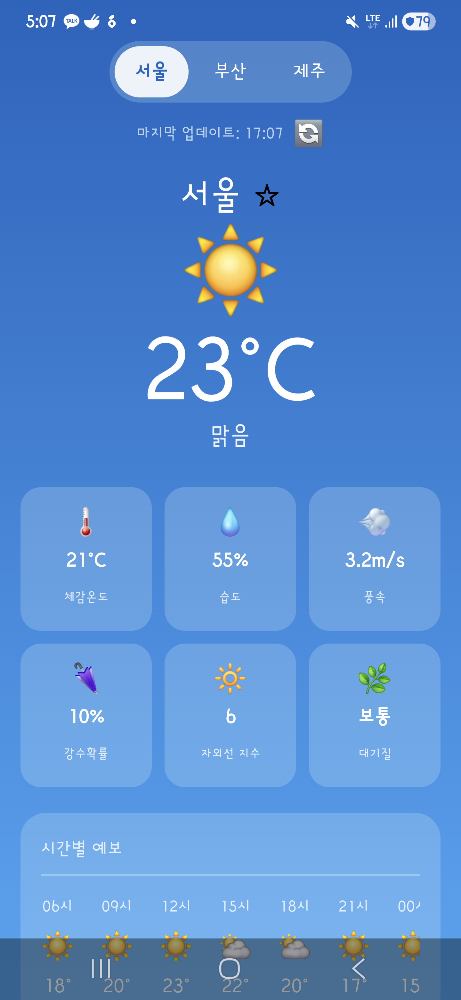
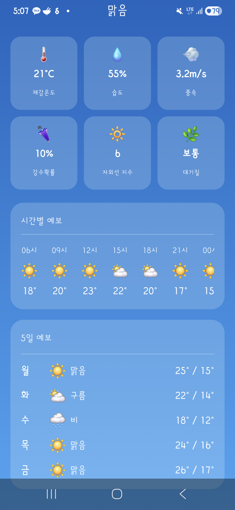
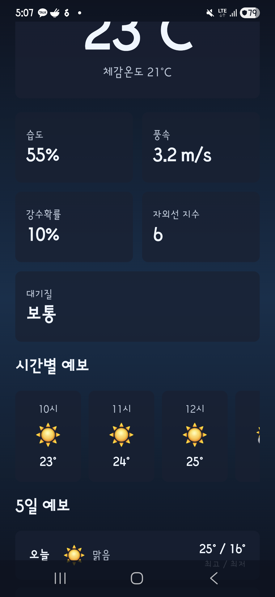
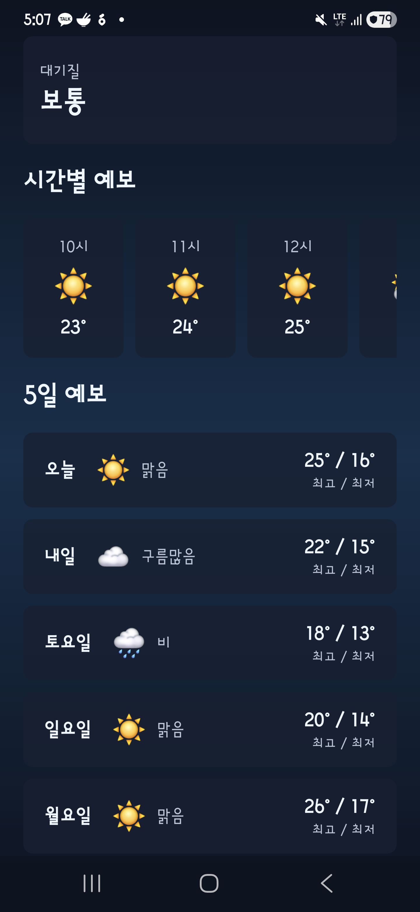
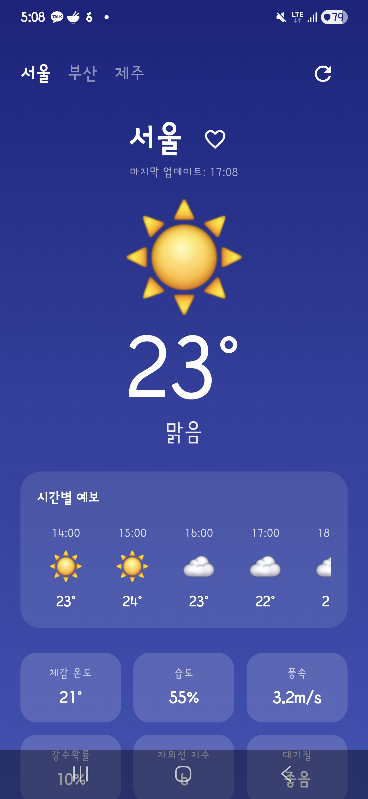
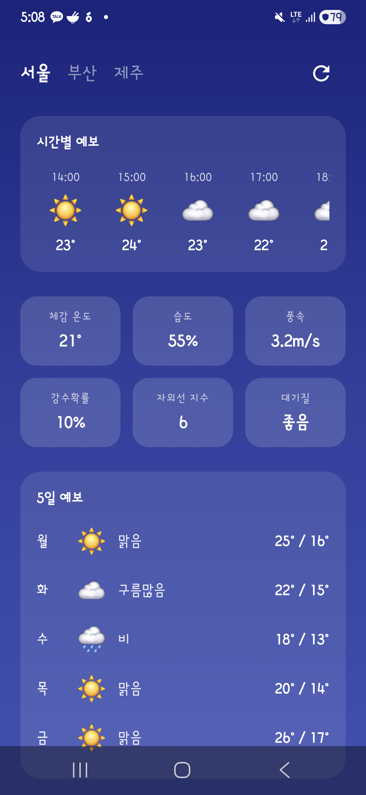
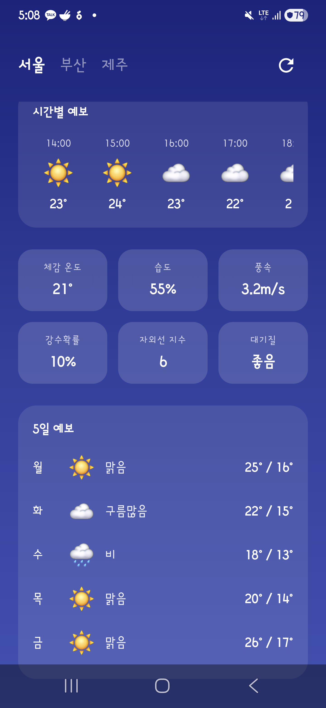
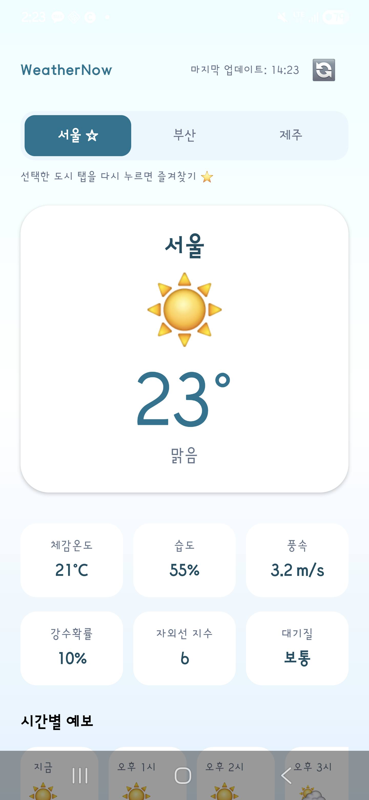
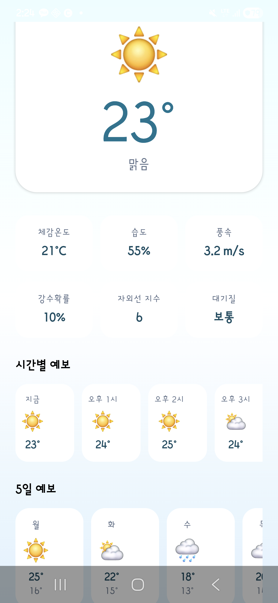
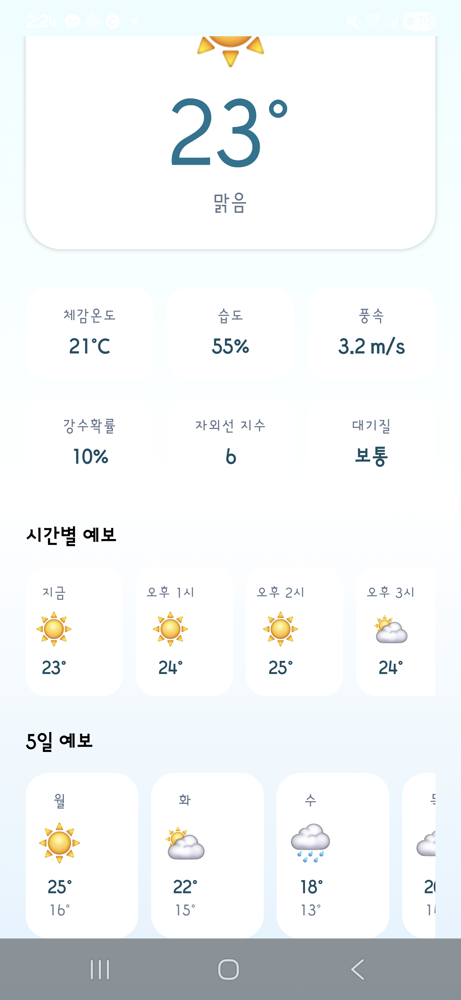

WeatherNow V2 기능 개선 비교
각 AI가 자신이 만든 V1 코드를 읽고, 시간별 예보·새로고침·즐겨찾기를 추가하도록 동일한 프롬프트를 주었습니다. 처음부터 다시 만드는 게 아니라 기존 코드를 이해하고 확장하는 능력을 측정하는 단계입니다. 4개 AI 모두 6가지 요구사항을 전부 충족했으며, Codex는 V1에서 미해결로 남아 있던 한국어 깨짐 버그를 이 단계에서 명시적 지시 없이 스스로 수정했습니다.
실험 개요
각 AI에게 자신이 V1에서 작성한 코드를 넘겨주고, 동일한 V2 프롬프트로 기능을 추가하도록 했습니다. "V1을 얼마나 잘 읽고 이어서 쓸 수 있는가"를 측정한 단계입니다.
실험 프롬프트
You are improving the existing WeatherNow Android app in this directory. Do not recreate the project from scratch. Read the existing code first, then improve it in place. Experiment context: This project is part of an AI comparison experiment. Claude, Codex, and Gemini each created a v1 Android weather app from the same original prompt. Now each AI must improve its own existing v1 project using this same v2 prompt. The goal is to compare how well each AI understands, preserves, and extends an existing codebase. Goal: Turn the current simple mock weather app into a more useful, production-like weather dashboard while keeping it lightweight and mock-data only. Fixed constraints: - Keep Kotlin. - Keep Jetpack Compose (안드로이드 UI 프레임워크). - Keep MVVM (화면·로직 분리 아키텍처 패턴) with ViewModel (화면 로직을 담당하는 클래스) + UiState (화면에 표시할 데이터를 담는 상태 객체). - Keep package name: com.example.weathernow. - Do not add external libraries. - Do not use a real weather API. - Use mock data (테스트용 가짜 데이터) only. - Keep a single Activity. - Ensure ./gradlew assembleDebug (안드로이드 앱 빌드 명령어) succeeds. Required improvements: 1. Fix any broken Korean text or garbled strings in the app. 2. Preserve all v1 features: - city switching for Seoul, Busan, Jeju - current temperature - weather condition - feels-like temperature - humidity - wind speed - 5-day forecast 3. Add hourly forecast using mock data: - at least 6 hourly items - time, condition icon, temperature 4. Add extra weather details: - precipitation probability - UV index - air quality 5. Add a refresh action: - show last updated time - simulate refresh using mock data - show a brief loading state 6. Add favorite city behavior: - user can mark one city as favorite - favorite state is kept in ViewModel state - no persistence required 7. Improve UI/UX: - clearer visual hierarchy - better spacing - readable Korean labels - one consistent light or dark theme - no overlapping text - still usable on a small Android screen 8. Keep code maintainable: - avoid one huge composable if possible - create reusable composables where appropriate - avoid unnecessary rewrites Important implementation guidance: - Start by inspecting the existing files in this directory. - Preserve the current project structure unless there is a clear reason to adjust it. - Prefer small, safe, maintainable changes over a full rewrite. - If the current project has garbled Korean due to encoding issues, replace it with proper Korean strings: - Seoul: 서울 - Busan: 부산 - Jeju: 제주 - Sunny: 맑음 - Cloudy: 구름많음 - Rain: 비 - Feels like: 체감온도 - Humidity: 습도 - Wind: 풍속 - 5-day forecast: 5일 예보 - Hourly forecast: 시간별 예보 - Precipitation: 강수확률 - UV index: 자외선 지수 - Air quality: 대기질 - Last updated: 마지막 업데이트 - Favorite: 즐겨찾기 - Use emoji or Compose-drawn icons only. Do not add external image resources. After implementation: - Run ./gradlew assembleDebug (안드로이드 앱 빌드 명령어). - Briefly summarize what changed. - Mention whether the build passed.
종합 비교
4개 AI 모두 기능 요구사항(6/6)과 빌드 성공을 달성했습니다. 차이는 속도(149초~361초), 토큰 소비량(64만~161만), 코드 구조(파일 5~9개, 518~748줄)에서 나타납니다. Codex는 토큰과 시간을 가장 많이 썼고, Gemini는 가장 적게 썼습니다.
| 항목 | Claude | Codex | Gemini | Cursor |
|---|---|---|---|---|
| 모델 | claude-sonnet-4-6 (Claude Code CLI v2.1.153) | gpt-5.5 (OpenAI Codex CLI v0.134.0) | gemini-3.1-flash-lite + gemini-3-flash (Gemini CLI v0.43.0) | auto (Cursor Agent) |
| 소요 시간 | 360.6초 | 315초 | 149.4초 | 240초 |
| 총 사용 토큰 | 1,043,992 | 1,615,940 | 642,641 | 1,228,000 |
| Kotlin 파일/라인 | 5개 / 580줄 | 6개 / 736줄 | 5개 / 518줄 | 9개 / 748줄 |
| 빌드 | 성공 | 성공 | 성공 | 성공 |
| 요구사항 충족 | 6/6 | 6/6 | 6/6 | 6/6 |
| V1 대비 변경 파일 | 3개 | 6개 | 4개 | 8개 |
| UI 테마 | 밝은 블루 그라디언트, V1 감성 유지 | 다크 네이비 대시보드 | 블루 그라디언트, 모바일 앱 액션 중심 | 라이트 청록(teal) 그라디언트, V1 감성 유지 |
토큰 사용량
토큰(token)은 AI가 처리한 텍스트 단위입니다. 코드·대화·파일 내용을 모두 포함하며, 많을수록 비용이 높아집니다. Claude는 캐시(cache) 덕분에 입력 토큰 94%를 재사용해 실제 과금 비용이 낮았습니다. Codex는 총량이 가장 많았고(161만), Gemini는 가장 적었습니다(64만).
총 입력 토큰의 94%(979,789개)가 캐시에서 재사용되었습니다. 캐시 재사용 토큰은 신규 입력보다 과금이 훨씬 낮아, 실제 비용($0.82)이 토큰 총량에 비해 낮게 나왔습니다. 보조 모델(claude-haiku 계열)은 1,303개를 별도로 사용했습니다.
4개 AI 중 총 토큰이 가장 많습니다(161만). 입력 토큰 160만 중 캐시 적중분이 140만으로, 실질적으로 새롭게 처리한 입력은 약 20만 토큰입니다. 출력(생성) 토큰은 11,382개로 상대적으로 적어, 파일 읽기를 반복한 탓에 입력이 크게 부풀어 있습니다.
4개 AI 중 가장 적은 토큰을 사용했습니다(64만). 보조 모델(gemini-3.1-flash-lite)이 라우팅·요약에 4,419개를 소모했고, 본 작업 모델(gemini-3-flash)이 나머지 63만 8천 개를 처리했습니다. Claude(104만), Codex(161만) 대비 절반 이하입니다.
Cursor는 입·출력 토큰을 분리 제공하지 않아 총계(122.8만)만 파악됩니다. $0.38은 Included 요금제 한도 내 소모분으로 추가 청구는 없었습니다. 18:26 시점의 Usage 스냅샷 기준이므로 이후 변동이 있을 수 있습니다.
실행 화면
각 앱을 실제 기기에 설치한 뒤 상단, 중간, 하단 스크롤 위치를 동일한 방식으로 캡처했습니다.











구현 관찰
4개 AI 모두 요구사항을 충족했지만, 어떻게 구현했는지는 각기 다릅니다. V1 코드 보존 정도, UI 재설계 범위, 컴포넌트 분리 방식에서 뚜렷한 차이가 있습니다.
| AI | UI 테마 | 주요 기능 | 구체적 관찰 |
|---|---|---|---|
| Claude | 밝은 블루 그라디언트, V1 감성 유지 | 시간별 예보, 상세 날씨 카드, 새로고침/마지막 업데이트, 즐겨찾기 | 4개 AI 중 V1의 시각 정체성을 가장 많이 보존했습니다. 변경 파일 3개(최소)로 필요한 기능만 추가했습니다. 단, 하단 시간별 예보 목록이 Android 내비게이션 바에 가려지는 레이아웃 문제가 있습니다. |
| Codex | 다크 네이비 대시보드 | 시간별 예보, 상세 날씨, 새로고침, 즐겨찾기 | V1 라이트 테마에서 다크 네이비로 UI를 전면 재설계했습니다. 덕분에 컴포넌트 분리(ForecastRow, MetricTile 등)가 4개 중 가장 명확하지만, V1 스타일 보존 의도와는 거리가 있습니다. V1에서 깨져 있던 한국어 문자열을 이 단계에서 별도 지시 없이 스스로 수정한 유일한 AI입니다. |
| Gemini | 블루 그라디언트, 모바일 앱 액션 중심 | 시간별 예보, 상세 날씨 카드, 새로고침 아이콘, 즐겨찾기 하트 | 새로고침·즐겨찾기 버튼을 상단 AppBar에 배치해, 스크롤 없이 바로 접근할 수 있습니다. Claude·Cursor가 하단에 배치한 것과 대조됩니다. 하단 시간별 예보가 내비게이션 바에 겹치는 문제는 Claude와 동일하게 발생합니다. |
| Cursor | 라이트 청록(teal) 그라디언트, V1 감성 유지 | 시간별 예보(HourlyCard), 상세 날씨, 새로고침, 즐겨찾기, 도시 탭(CityTabBar) | V1 스타일을 유지하면서 새 기능을 독립 컴포넌트(CityTabBar, HourlyCard, WeatherHeader)로 분리했습니다. 다른 AI들이 기존 파일을 확장한 것과 달리, Cursor는 파일을 8개나 변경·신규 추가해 구조를 가장 많이 바꿨습니다. IDE 에이전트(Agent 모드) 방식으로 실행해 증분 빌드 시간은 8.2초였습니다. |
코드 요약
Gemini가 518줄로 가장 간결하고, Cursor가 748줄로 가장 많습니다. 줄 수 자체보다 변경 파일 수가 더 의미 있는 지표입니다. 변경 파일이 적을수록 기존 구조를 적게 건드렸다는 뜻입니다. Claude 3개 → Gemini 4개 → Codex 6개 → Cursor 8개 순으로 변경 범위가 넓어집니다.
| AI | Kotlin 파일 수 | 총 Kotlin 라인 | V1 대비 변경 파일 수 |
|---|---|---|---|
| Claude | 5개 | 580줄 | 3개 (최소 변경) |
| Codex | 6개 | 736줄 | 6개 (전 파일 수정) |
| Gemini | 5개 | 518줄 (최소 코드) | 4개 |
| Cursor | 9개 | 748줄 (최대 코드) | 8개 (신규 파일 3개 포함) |
.../com/example/weathernow/data/WeatherData.kt | 48 +++- .../com/example/weathernow/ui/WeatherScreen.kt | 263 +++++++++++++++------ .../weathernow/viewmodel/WeatherViewModel.kt | 40 +++- 3 files changed, 268 insertions(+), 83 deletions(-)
WeatherData·ViewModel에 새 데이터 구조를 추가하고, WeatherScreen 한 파일에 UI 변경을 집중했습니다. 변경 파일 3개는 4개 AI 중 가장 적습니다.
.../java/com/example/weathernow/MainActivity.kt | 4 +- .../java/com/example/weathernow/WeatherData.kt | 91 ++++-- .../com/example/weathernow/WeatherViewModel.kt | 58 +++- .../com/example/weathernow/ui/WeatherScreen.kt | 328 ++++++++++++++++----- .../weathernow/ui/components/ForecastRow.kt | 10 +- .../example/weathernow/ui/components/MetricTile.kt | 6 +- 6 files changed, 391 insertions(+), 106 deletions(-)
WeatherScreen에만 추가 삽입(+328줄)이 집중되었고, WeatherData에서도 +91줄이 늘었습니다. V1부터 있던 ForecastRow·MetricTile 컴포넌트도 한국어 수정을 위해 함께 변경되었습니다.
.../java/com/example/weathernow/WeatherData.kt | 45 ++++- .../com/example/weathernow/WeatherViewModel.kt | 49 +++++- .../com/example/weathernow/ui/WeatherScreen.kt | 185 ++++++++++++++------- .../weathernow/ui/components/WeatherComponents.kt | 93 ++++++++--- 4 files changed, 293 insertions(+), 79 deletions(-)
삽입량이 293줄로 4개 AI 중 가장 적습니다. WeatherScreen 변경폭도 +185줄로 Claude(263) · Codex(328) · Cursor(275+신규 3파일)보다 작아, 가장 간결하게 기능을 추가했습니다.
app/build.gradle.kts | 수정 .../java/com/example/weathernow/MainActivity.kt | 수정 .../java/com/example/weathernow/WeatherData.kt | 수정 .../java/com/example/weathernow/WeatherViewModel.kt | 수정 .../java/com/example/weathernow/ui/WeatherScreen.kt | 수정 .../java/com/example/weathernow/ui/components/CityTabBar.kt | 신규 .../java/com/example/weathernow/ui/components/HourlyCard.kt | 신규 .../java/com/example/weathernow/ui/components/WeatherHeader.kt | 신규 8 files changed, V1(7파일·473줄) → V2(9파일·748줄), +275줄
기존 파일 5개를 수정하고 컴포넌트 파일 3개를 신규 추가했습니다. 단일 파일에 기능을 쌓는 대신 역할별로 파일을 나누는 방식입니다. 변경 범위는 가장 넓지만, 각 파일의 책임이 명확해집니다.